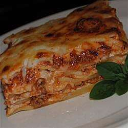

Homemade Lasagna Recipe
Delicious Homemade Lasagna

This homemade lasagna recipe is sure to delight. It's a simple recipe that is easy to make with basic ingredients and also tastes delicious.
The kids will love it! This recipe only takes just over an hour with prep time, cooking, and cooling. Serve hot and watch your guests enjoy!
Ingredients You'll Need
- 1 (16 ounce) package lasagna noodles
- 1 pound lean ground beef
- 3 (15 ounce) cans tomato sauce
- 1 (6 ounce) can tomato paste
- 2 teaspoons garlic salt
- 5 tablespoons Italian seasoning
- 1 pint part-skim ricotta cheese
- 2 cups shredded mozzarella cheese
How to Prepare
- In a large pot cook lasagna noodles in boiling salted water until al dente. Rinse with cool water. Drain.
- In large sauce pan cook ground beef. Drain excess grease. Combine tomato sauces and tomato paste with ground beef and simmer until bubbly. Add garlic salt and Italian seasoning and reduce heat to low simmer. Cook for 10 minutes.
- To assemble, in the bottom of a 13x9 inch baking dish spread a thin layer of sauce. Next, add a layer of noodles, ricotta cheese, sauce/ground beef mixture, and then grated mozzarella cheese. Repeat until baking dish is filled. Garnish top with additional shredded mozzarella cheese.
- In a preheated 375 degree F(190 degree C) oven bake for 30 minutes or until bubbly. Let stand for 15 minutes and serve.